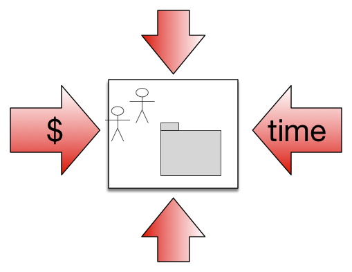
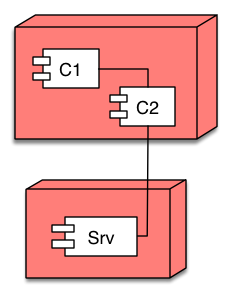

Part One · How you work
The arc42 method
arc42 is best known as a documentation template, but it is more than that. It is also an opinionated method for developing and evolving software architecture: six recurring, interrelated activities, held together by constant learning and continuous feedback.
The template answers where architecture information belongs; the method answers how you work to produce it. And arc42 does take a position on the how.
It proposes six core activities, with no fixed order and highly interrelated, so the results of any one refine the others in the next increment. Along the way it takes clear stances: clarify the most important quality requirements before anything else, structure the system along its domain, and choose the crosscutting concepts that actually make those quality goals achievable.
Activity i Learn constantly
IT is a dynamic industry: new technologies, methods, libraries and frameworks appear all the time. To design, implement and operate systems responsibly, you need to assess the impact of such innovations on your current system, which only works if independent learning becomes a fundamental habit.
Activity ii Clarify requirements
Development teams need a robust foundation of goals, requirements and constraints to make targeted decisions. Software architects contribute decisively here: by questioning quality requirements, categorizing functional requirements, and identifying technical risks.
Activity iii Design structures
Building a system out of smaller parts is one of the fundamental tasks of architecture and development. arc42 calls these parts building blocks, deliberately technology-neutral. This task produces the static Building Block View, its dynamic counterpart, the Runtime View, and the interfaces that connect building blocks with each other and with the outside world.
Activity iv Design cross-cutting concepts
Some decisions affect single building blocks; others cut across the whole system: the choice of base technology and infrastructure, the frameworks and libraries in use, recurring patterns, or the approach to build, deployment, test and release. A small sample of questions such concepts answer:
- How is the user interface structured and implemented, with which libraries or patterns?
- How and where is persistent data stored, distributed and read?
- How do the system and its building blocks handle errors and exceptions?
- How does the system handle logging and monitoring?
Activity v Communicate and document
Coordinate architecture and design decisions with the relevant stakeholders, solicit their feedback, and incorporate it where appropriate. Communicate intensively in person, especially with and within the development team, and put decisions in writing as sparingly as possible. How much you write down depends on your industry, the type of system, its criticality and risk.
Activity vi Accompany the implementation
Good design discussions are not enough: deviations from agreed decisions can creep into the source code, on purpose or by accident. Work with your team to ensure the code implements the intended structures and concepts, which means actually looking into the source code and comparing the implementation against the target.
This works in both directions. Sometimes individual developers have better ideas than the original design: find these gold pieces and make them part of the architecture. In other cases, developers misunderstand a decision or concept; then coach, explain, or help with the implementation.
& always Analyze and evaluate
Ask yourself at regular intervals whether your decisions and concepts still achieve the desired effect from today's perspective. A methodical look in the rear-view mirror either confirms your decisions (great, move on!) or reveals weaknesses and risks early enough to plan appropriate improvements.
None of these tasks is ever truly finished. Learn constantly, and iterate with continuous feedback. The two principles behind every activity
Where it all gets written down
The results of the method land in the template: twelve sections, read here like the table of contents of a well-organized book. Each links to its detailed documentation.
-
1
 docs § 1
docs § 1Introduction & Goals
Fundamental requirements, especially quality goals
-
2

docs § 2Constraints
Regulations and external constraints
-
3
 docs § 3
docs § 3Context & Scope
External systems and interfaces
-
4
docs § 4
Solution Strategy
Core ideas and solution approaches
-
5
 docs § 5
docs § 5Building Block View
Structure of source code, modularization (hierarchical)
-
6
 docs § 6
docs § 6Runtime View
Important runtime scenarios
-
7

docs § 7Deployment View
Hardware, infrastructure and deployment
-
8
 docs § 8
docs § 8Crosscutting Concepts
Cross-cutting topics, often very technical and detailed
-
9
 docs § 9
docs § 9Architectural Decisions
Important decisions, not described elsewhere
-
10
 docs § 10
docs § 10Quality Requirements
Quality tree, quality scenarios
-
11
 docs § 11
docs § 11Risks & Technical Debt
Known problems and risks
-
12
 docs § 12
docs § 12Glossary
Important and specific terms ("ubiquitous language")